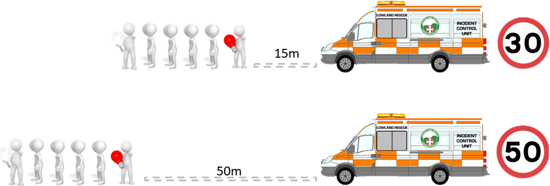

Protection Overview
Where possible, vehicle protection shall be provided to the road search team
This is
only possible when the road search is in the same direction as the flow of traffic
An authorised vehicle
will follow the team with flashing beacons (amber for team vehicles and blue for police vehicles)
Safety Distances
An appropriate distance should be maintained between the vehicle and the rear team
member
30mph - 15m
40mph - 35m
50+mph - 50m
Authorised Vehicle
Key Distances
